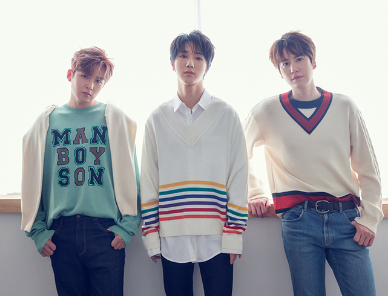
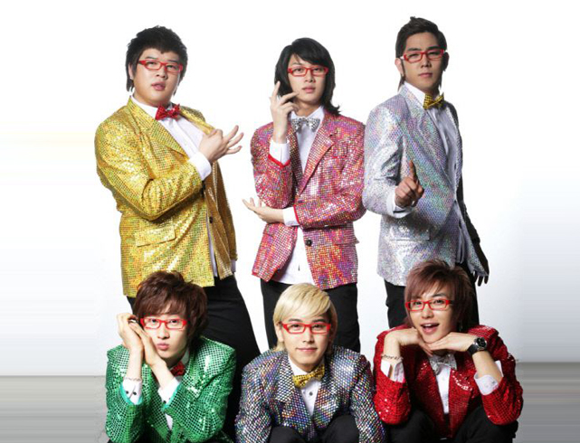
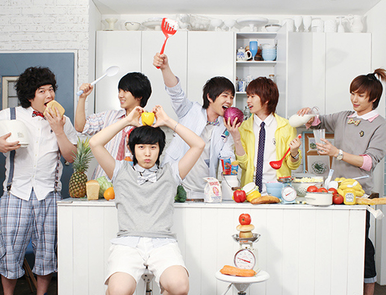
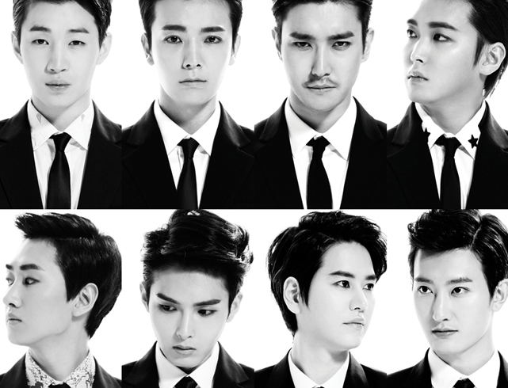
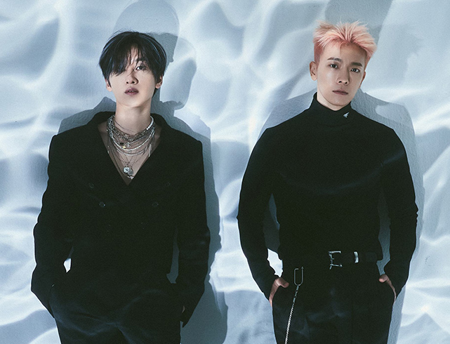

Since their debut, SM Entertainment created five sub-units for Super Junior. Their creation were part of SM's strategy not to limit Super Junior's activities and to show that the group could sing different musical styles.
Each member participates in at least one sub-unit, except for Kibum.
The first sub-unit of Kpop was created in 2006, a trio formed by Kyuhyun, Ryeowook and Yesung. Super Junior KRY is credited for singing R&B ballads and OSTs.
Considered the oldest pop genre in Korea, having originated in the 1900s, trot received a reinterpretation in this unit formed by six members of Super Junior. Named Super Junior-T, they debuted in 2007 by releasing the mini album Rokkugo.
Super Junior-Happy (also called Super Junior-H) was yet another short-lived unit, having only released one mini album. With a playful image, lots of colors and letters that stick to the mind like bubblegum.
SM Entertainment began their journey to win the Chinese market with Super Junior-M. The unit was named after the language sung by them on the tracks: Mandarin. Furthermore, the first lineup included two Chinese members: Hangeng, the only foreign member to debut in the original Super Junior lineup, and Zhoumi. Another unique member of this unit was Henry.
SuJu-M made its debut in 2008, but the year before it had come under threat of boycotts. Fans disliked the addition of Henry and Zhoumi to the group and petitioned online to prevent this from happening.
Despite the scandals, the unit was successful.
The last unit formed by Super Junior members is the smallest of all and the most frequently released. Returning to the logic used in K.R.Y., here we have references to the initials of the members who are part of it: Donghae and Eunhyuk.
Super Junior-D&E was formed in December 2011. They have releases in Korean and Japanese.
